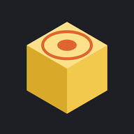

Tapscad
Política de privacidad
Última actualización: 23 de noviembre de 2026
Esta política explica qué datos se tratan cuando usas Tapscad (la «app»), un visor y editor de archivos OpenSCAD para Android publicado por Isaac Ruiz (el «desarrollador»).
Resumen
Tus archivos y modelos nunca salen del dispositivo: la app los abre, los renderiza y los guarda en el propio móvil. La app no tiene analíticas ni cuentas de usuario.
La app es gratuita y muestra algunos anuncios (Google AdMob). Para eso, y solo para eso, usa internet; los datos que trata ese servicio de Google se explican abajo.
Tus archivos
La app solo accede a la carpeta de proyecto que eliges con el selector de archivos de Android y a los archivos que abres desde otras apps («Abrir con»). Los lee y los guarda en tu dispositivo; el renderizado de los modelos 3D también se hace en el dispositivo. Puedes retirar el acceso a la carpeta en cualquier momento eligiendo otra o borrando los datos de la app.
Datos que guarda la app
Los ajustes (idioma, tema, vista) y el texto del archivo abierto, para no perder cambios si la app se cierra, se guardan solo en tu dispositivo. Si desinstalas la app o borras sus datos, esta información se elimina.
Compartir
Si eliges «Compartir STL» o «Compartir .scad», el archivo se entrega a la app que selecciones en el menú de Android (correo, Drive…). Ese envío lo decides tú y lo hace esa otra app, con su propia política de privacidad.
Anuncios (Google AdMob)
Los anuncios solo aparecen después de exportar o compartir un modelo (como mucho, uno de cada tres), o cuando eliges ver un vídeo a cambio de 24 horas sin anuncios. Los sirve Google AdMob, que puede tratar el identificador de publicidad del dispositivo, la dirección IP, datos técnicos del dispositivo y de la app, y cómo interactúas con los anuncios, para mostrarlos, medirlos y evitar el fraude. Si estás en el Espacio Económico Europeo, Reino Unido o Suiza, la app te pide antes tu consentimiento con el formulario de Google y puedes cambiarlo cuando quieras en Ajustes → Privacidad de los anuncios. Si no das tu consentimiento, los anuncios no son personalizados. También puedes restablecer o eliminar el identificador de publicidad en los ajustes de Android. El desarrollador no recibe ninguno de estos datos de forma que te identifique. Más información: cómo usa Google los datos de las apps que usan sus servicios.
Los anuncios están limitados a contenido apto para todos los públicos.
Permisos
El acceso a carpetas y archivos se concede con el selector del sistema, solo para lo que eliges. Los permisos de internet, estado de la red e identificador de publicidad los usan únicamente los anuncios.
Menores
La app no está dirigida a menores de 13 años. Los anuncios se limitan a contenido apto para todos los públicos.
Cambios
Si esta política cambia, se publicará aquí con una nueva fecha de actualización.
Contacto
Privacy Policy
Last updated: November 23, 2026
This policy explains what data is processed when you use Tapscad (the "app"), an OpenSCAD file viewer and editor for Android published by Isaac Ruiz (the "developer").
Summary
Your files and models never leave your device: the app opens, renders and saves them on the phone itself. The app has no analytics and no user accounts.
The app is free and shows a few ads (Google AdMob). It uses the internet for that, and only for that; the data this Google service processes is explained below.
Your files
The app only accesses the project folder you choose with the Android file picker and the files you open from other apps ("Open with"). It reads and saves them on your device; 3D models are also rendered on the device. You can revoke access to the folder at any time by choosing another one or clearing the app's data.
Data stored by the app
Settings (language, theme, view) and the text of the open file, so that changes are not lost if the app closes, are stored only on your device. If you uninstall the app or clear its data, this information is deleted.
Sharing
If you choose "Share STL" or "Share .scad", the file is handed to the app you pick in the Android menu (email, Drive…). You decide that transfer, and it is carried out by that other app under its own privacy policy.
Ads (Google AdMob)
Ads only appear after you export or share a model (one every three at most), or when you choose to watch a video in exchange for 24 hours without ads. They are served by Google AdMob, which may process the device's advertising ID, IP address, technical data about the device and the app, and your interactions with ads, in order to show and measure them and prevent fraud. If you are in the European Economic Area, the UK or Switzerland, the app first asks for your consent with Google's form, and you can change it at any time in Settings → Ad privacy. If you do not consent, ads are not personalized. You can also reset or delete the advertising ID in Android's settings. The developer does not receive any of this data in a way that identifies you. More information: how Google uses data from apps that use its services.
Ads are limited to content suitable for all audiences.
Permissions
Access to folders and files is granted through the system picker, only for what you choose. The internet, network state and advertising ID permissions are used only by ads.
Children
The app is not directed at children under 13. Ads are limited to content suitable for all audiences.
Changes
If this policy changes, it will be published here with a new update date.